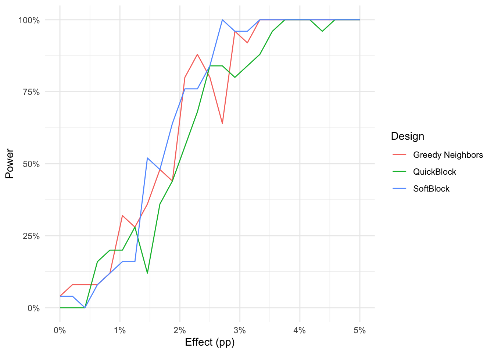
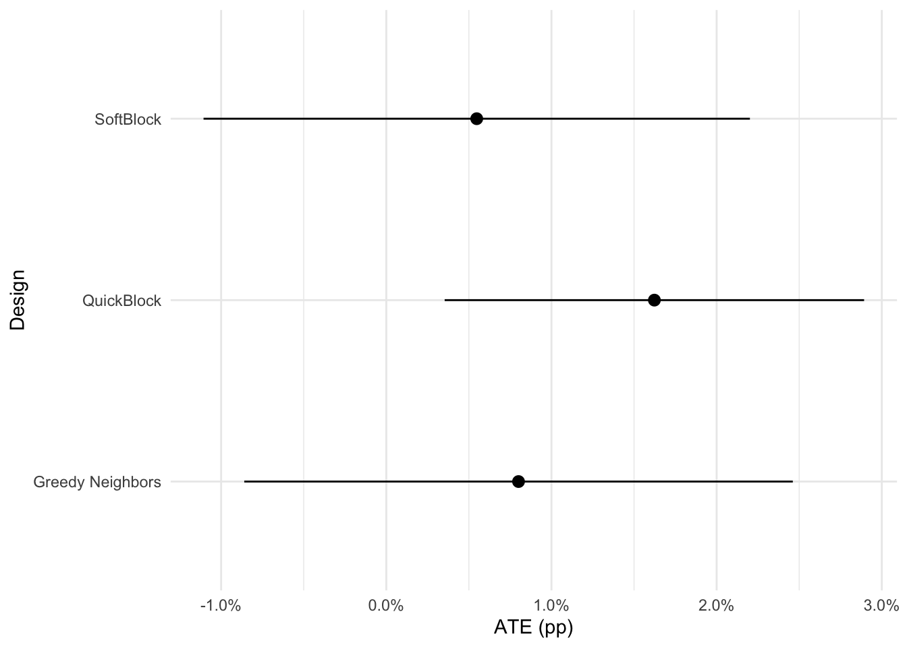
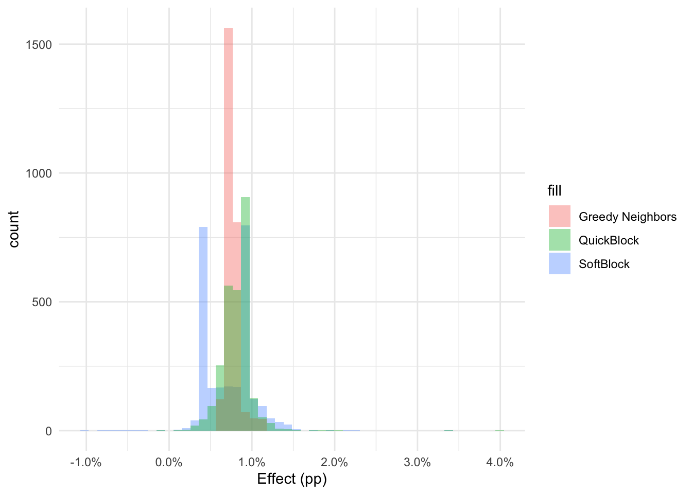

Introduction
In particular, I’m going to imagine that I’m designing an experiment in which I assign different treatments to particular precincts in North Carolina. In order to optimize power, of course, we want to make sure that our two test groups look as similar as possible in terms of prior voting patterns.
Thus, the steps in this design will be:
- Collect relevant historical data.
- Define variables on which we wish to balance.
- Allocate treatment assignment using new methods.
- Simulate the power of hypothesis tests under the proposed design.
- Fake some outcome data and analyze it for average and heterogeneous treatment effects.
Implementation of methods
Description
The relevant API is a function with tidyverse semantics called assign_softblock (or assign_greedy_neighbors). These functions accept a vector of columns to be used in the design. The SoftBlock version additionally accepts two arguments, .s2 for the bandwidth of the RBF kernel to use in the construction of a similarity matrix as well as .neighbors which indicates the number of nearest neighbors to include in the graph on which to construct the spanning tree. These parameters don’t generally need to be modified.
Source Code
See source code
Code
writeLines(readLines("https://raw.githubusercontent.com/ddimmery/softblock/master/r_implementation.R"))library(Matrix)
library(igraph)
library(FNN)
library(hash)
assign_greedily <- function(graph) {
adj_mat = igraph::as_adjacency_matrix(graph, type="both", sparse=TRUE) != 0
N = nrow(adj_mat)
root_id = make.keys(sample(N, 1))
a = rbinom(1, 1, 0.5)
visited = hash()
random_order = make.keys(sample(N))
unvisited = hash(random_order, random_order)
colors = hash()
stack = hash()
stack[[root_id]] <- a
tentative_color = rbinom(N, 1, 0.5)
while ((!is.empty(unvisited)) || (!is.empty(stack))) {
if (is.empty(stack)) {
cur_node = keys(unvisited)[1]
del(cur_node, unvisited)
color = tentative_color[as.integer(cur_node)]
} else {
cur_node = keys(stack)[1]
color = stack[[cur_node]]
del(cur_node, stack)
del(cur_node, unvisited)
}
visited[[cur_node]] = cur_node
colors[[cur_node]] = color
children = make.keys(which(adj_mat[as.integer(cur_node), ]))
for (child in children) {
if(has.key(child, unvisited)) {
stack[[child]] = 1 - color
}
}
}
values(colors, keys=1:N)
}
assign_softblock <- function(.data, cols, .s2=2, .neighbors=6) {
expr <- rlang::enquo(cols)
pos <- tidyselect::eval_select(expr, data = .data)
df_cov <- rlang::set_names(.data[pos], names(pos))
cov_mat = scale(model.matrix(~.+0, df_cov))
N = nrow(cov_mat)
st = lubridate::now()
knn = FNN::get.knn(cov_mat, k=.neighbors)
st = lubridate::now()
knn.adj = Matrix::sparseMatrix(i=rep(1:N, .neighbors), j=c(knn$nn.index), x=exp(-c(knn$nn.dist) / .s2))
knn.graph <- graph_from_adjacency_matrix(knn.adj, mode="plus", weighted=TRUE, diag=FALSE)
E(knn.graph)$weight <- (-1 * E(knn.graph)$weight)
st = lubridate::now()
mst.graph = igraph::mst(knn.graph)
E(mst.graph)$weight <- (-1 * E(mst.graph)$weight)
st = lubridate::now()
assignments <- assign_greedily(mst.graph)
.data$treatment <- assignments
attr(.data, "laplacian") <- igraph::laplacian_matrix(mst.graph, normalize=TRUE, sparse=TRUE)
.data
}
assign_greedy_neighbors <- function(.data, cols) {
expr <- rlang::enquo(cols)
pos <- tidyselect::eval_select(expr, data = .data)
df_cov <- rlang::set_names(.data[pos], names(pos))
cov_mat = scale(model.matrix(~.+0, df_cov))
N = nrow(cov_mat)
knn = FNN::get.knn(cov_mat, k=1)
knn.adj = Matrix::sparseMatrix(i=1:N, j=c(knn$nn.index), x=c(knn$nn.dist))
knn.graph <- graph_from_adjacency_matrix(knn.adj, mode="plus", weighted=TRUE, diag=FALSE)
assignments <- assign_greedily(knn.graph)
.data$treatment <- assignments
attr(.data, "laplacian") <- igraph::laplacian_matrix(knn.graph, normalize=TRUE, sparse=TRUE)
.data
}
assign_matched_pairs <- function(.data, cols, .s2=2, .neighbors=6) {
expr <- rlang::enquo(cols)
pos <- tidyselect::eval_select(expr, data = .data)
df_cov <- rlang::set_names(.data[pos], names(pos))
cov_mat = scale(model.matrix(~.+0, df_cov))
N = nrow(cov_mat)
knn = FNN::get.knn(cov_mat, k=.neighbors)
knn.adj = Matrix::sparseMatrix(i=rep(1:N, .neighbors), j=c(knn$nn.index), x=exp(-c(knn$nn.dist) / .s2))
knn.graph <- graph_from_adjacency_matrix(knn.adj, mode="plus", weighted=TRUE, diag=FALSE)
E(knn.graph)$weight <- (-1 * E(knn.graph)$weight)
mwm.graph = igraph::max_bipartite_match(knn.graph)
E(mwm.graph)$weight <- (-1 * E(mwm.graph)$weight)
assignments <- assign_greedily(mwm.graph)
.data$treatment <- assignments
attr(.data, "laplacian") <- igraph::laplacian_matrix(mwm.graph, normalize=TRUE, sparse=TRUE)
.data
}
# library(tibble)
# data = tibble(
# x1=runif(10),
# x2=runif(10),
# x3=rbinom(10, 1, 0.5)
# )
# library(dplyr)
# library(tidyr)
# library(ggplot2)
# data %>% assign_softblock(c(x1, x2)) -> newdata
# ggplot(newdata, aes(x=x1, y=x2, color=factor(treatment), shape=factor(x3))) + geom_point() + theme_minimal()
# newdata %>%
# attr("laplacian") %>%
# ifelse(lower.tri(.), ., 0) %>%
# as_tibble() -> adj_df
# names(adj_df) <- paste0(1:ncol(adj_df))
# adj_df %>%
# group_by(id_1=as.character(row_number())) %>%
# gather(id_2, weight, -id_1) %>%
# filter(weight != 0) %>%
# mutate(id_2=as.character(id_2), id=paste(id_1, id_2, sep='-')) -> adj_df
# locs = newdata %>% mutate(id=as.character(row_number())) %>% select(id, x1, x2, x3)
# edges=bind_rows(
# adj_df %>% inner_join(locs, by=c('id_1'='id')),
# adj_df %>% inner_join(locs, by=c('id_2'='id'))
# ) %>% arrange(id) %>% ungroup()
# pp = ggplot(newdata, aes(x=x1, y=x2)) +
# geom_line(aes(group=id, size=1), data=edges, color='grey') +
# geom_point(aes(color=factor(treatment), shape=factor(x3), size=2), alpha=.9) +
# scale_size_continuous(range=c(1, 3)) +
# theme_minimal() + theme(legend.position='none')
# print(pp)Data Preparation
This demo will be based on North Carolina data because their Board of Elections makes it very easy to get precinct level data. I’m also only going to use historical data from the most recent election to avoid needing to match precincts across elections.
With access to a full voter file, this section could be drastically improved by incorporating other important elements into the design like demographics.
Get Precinct data
Results Data
Code
url <- "http://dl.ncsbe.gov/ENRS/2020_11_03/results_pct_20201103.zip"
zip_file <- tempfile(fileext = ".zip")
download.file(url, zip_file, mode = "wb")
spec = cols(
County = col_character(),
`Election Date` = col_character(),
Precinct = col_character(),
`Contest Group ID` = col_double(),
`Contest Type` = col_character(),
`Contest Name` = col_character(),
Choice = col_character(),
`Choice Party` = col_character(),
`Vote For` = col_double(),
`Election Day` = col_double(),
`One Stop` = col_double(),
`Absentee by Mail` = col_double(),
Provisional = col_double(),
`Total Votes` = col_double(),
`Real Precinct` = col_character(),
X16 = col_skip()
)
results <- readr::read_tsv(zip_file, col_types=spec)New names:
• `` -> `...16`Warning: The following named parsers don't match the column names: X16Shapefiles
Code
url = "https://s3.amazonaws.com/dl.ncsbe.gov/ShapeFiles/Precinct/SBE_PRECINCTS_20201018.zip"
temp <- tempfile()
temp2 <- tempfile()
download.file(url, temp)
unzip(zipfile = temp, exdir = temp2)
nc_SHP_file <- list.files(temp2, pattern = ".shp$",full.names=TRUE)
shapes <- sf::read_sf(nc_SHP_file)Aggregate Data and Join
Code
results %>%
filter(`Real Precinct` == 'Y') %>%
group_by(County, Precinct) %>%
summarize(
total_vote_pres=sum(`Total Votes`[`Contest Name` == 'US PRESIDENT'], na.rm=TRUE),
dem_share_pres=sum(`Total Votes`[`Contest Name` == 'US PRESIDENT' & `Choice Party` == 'DEM'], na.rm=TRUE)/total_vote_pres,
gop_share_pres=sum(`Total Votes`[`Contest Name` == 'US PRESIDENT' & `Choice Party` == 'REP'], na.rm=TRUE)/total_vote_pres,
total_vote_senate=sum(`Total Votes`[`Contest Name` == 'US SENATE'], na.rm=TRUE),
dem_share_senate=sum(`Total Votes`[`Contest Name` == 'US SENATE' & `Choice Party` == 'DEM'], na.rm=TRUE)/total_vote_senate,
gop_share_senate=sum(`Total Votes`[`Contest Name` == 'US SENATE' & `Choice Party` == 'REP'], na.rm=TRUE)/total_vote_senate,
total_vote_gov=sum(`Total Votes`[`Contest Name` == 'NC GOVERNOR'], na.rm=TRUE),
dem_share_gov=sum(`Total Votes`[`Contest Name` == 'NC GOVERNOR' & `Choice Party` == 'DEM'], na.rm=TRUE)/total_vote_gov,
gop_share_gov=sum(`Total Votes`[`Contest Name` == 'NC GOVERNOR' & `Choice Party` == 'REP'], na.rm=TRUE)/total_vote_gov,
total_vote_house=sum(`Total Votes`[grepl('US HOUSE OF REPRESENTATIVES DISTRICT', `Contest Name`)], na.rm=TRUE),
dem_share_house=sum(`Total Votes`[grepl('US HOUSE OF REPRESENTATIVES DISTRICT', `Contest Name`) & `Choice Party` == 'DEM'], na.rm=TRUE)/total_vote_house,
gop_share_house=sum(`Total Votes`[grepl('US HOUSE OF REPRESENTATIVES DISTRICT', `Contest Name`) & `Choice Party` == 'REP'], na.rm=TRUE)/total_vote_house
) %>% ungroup() -> results_agg`summarise()` has grouped output by 'County'. You can override using the
`.groups` argument.Code
inner_join(results_agg, shapes, by=c('County'='county_nam', 'Precinct'='prec_id')) -> df_joined
DT::datatable(df_joined %>% sample_n(size=100) %>% dplyr::select(-geometry), rownames = FALSE, options=list(scrollX=TRUE, autoWidth = TRUE))Add some geographic features
Code
df_joined$geometry %>%
st_centroid() %>%
st_transform("+init=epsg:4326") %>%
st_coordinates() -> latlongWarning in CPL_crs_from_input(x): GDAL Message 1: +init=epsg:XXXX syntax is
deprecated. It might return a CRS with a non-EPSG compliant axis order.Code
df_joined$longitude = latlong[, 'X']
df_joined$latitude = latlong[, 'Y']
area = df_joined$geometry %>% st_transform("+init=epsg:4326") %>% st_area()
df_joined$area_km2 = units::drop_units(area) / 1e6 # convert m^2 to km^2
df_joined <- df_joined %>% mutate(vote_density_pres = total_vote_pres / area_km2)Assign treatment four ways
Code
start_time = lubridate::now()
df_joined %>% assign_softblock(c(
longitude, latitude, area_km2, vote_density_pres, # geographic
total_vote_pres, dem_share_pres, gop_share_pres, # 2020 presidential
total_vote_senate, dem_share_senate, gop_share_senate, # 2020 senate
total_vote_gov, dem_share_gov, gop_share_gov, # 2020 governor
total_vote_house, dem_share_house, gop_share_house # 2020 house
)) %>%
rename(treatment_sb=treatment)-> df_joined
softblock_weights <- attr(df_joined, "laplacian")
end_time = lubridate::now()
print(end_time - start_time)Time difference of 0.7002029 secsCode
start_time = lubridate::now()
df_joined %>% assign_greedy_neighbors(c(
longitude, latitude, area_km2, vote_density_pres, # geographic
total_vote_pres, dem_share_pres, gop_share_pres, # 2020 presidential
total_vote_senate, dem_share_senate, gop_share_senate, # 2020 senate
total_vote_gov, dem_share_gov, gop_share_gov, # 2020 governor
total_vote_house, dem_share_house, gop_share_house # 2020 house
)) %>%
rename(treatment_nn=treatment)-> df_joined
nn_weights <- attr(df_joined, "laplacian")
end_time = lubridate::now()
print(end_time - start_time)Time difference of 1.446061 secsCode
start_time = lubridate::now()
df_joined %>% dplyr::select(
longitude, latitude, area_km2, vote_density_pres, # geographic
total_vote_pres, dem_share_pres, gop_share_pres, # 2020 presidential
total_vote_senate, dem_share_senate, gop_share_senate, # 2020 senate
total_vote_gov, dem_share_gov, gop_share_gov, # 2020 governor
total_vote_house, dem_share_house, gop_share_house # 2020 house
) -> df_qb
qb_blocks = quickblock(as.data.frame(df_qb), size_constraint = 6L)
df_joined$treatment_qb = as.integer(as.character(assign_treatment(qb_blocks, treatments=c('0', '1'))))
end_time = lubridate::now()
print(end_time - start_time)Time difference of 0.01819277 secsCode
# This is extremely slow.
# start_time = lubridate::now()
# df_joined %>% assign_matched_pairs(c(
# longitude, latitude, area_km2, vote_density_pres, # geographic
# total_vote_pres, dem_share_pres, gop_share_pres, # 2020 presidential
# total_vote_senate, dem_share_senate, gop_share_senate, # 2020 senate
# total_vote_gov, dem_share_gov, gop_share_gov, # 2020 governor
# total_vote_house, dem_share_house, gop_share_house # 2020 house
# )) %>%
# rename(treatment_mp=treatment)-> df_joined
# mp_weights <- attr(df_joined, "laplacian")
# end_time = lubridate::now()
# print(end_time - start_time)Power simulation
To do power calculations consistently across methods, I will do the following:
- Calculate the implied regression adjustment for each design, applied to vote share in 2020 as the outcome.
- Find the residual for each point.
- Permute residuals over units.
- Estimate power for a given effect size by pulling additional permutations.
- Sweep over a range of effect sizes.
Code
create_power_simulator = function(W, A, Y) {
dL = diag(W)
Dinv = (2 * A - 1) / dL
estimates = drop((Dinv %*% W) %*% Y)
residuals = Y - estimates
x_mat = cbind(A, 1)
xlx = t(x_mat) %*% W %*% x_mat
bread = MASS::ginv(as.matrix(xlx))
detect_effect = function(effect=1) {
sim_outcome = estimates + sample(residuals) + A * effect
coefs = bread %*% t(x_mat) %*% W %*% sim_outcome
r = diag(drop((sim_outcome - (x_mat %*% coefs)) ^ 2))
meat = t(x_mat) %*% (W %*% r %*% W) %*% x_mat
vcv = bread %*% meat %*% bread
upr = coefs[1] + qnorm(0.975) * sqrt(vcv[1])
lwr = coefs[1] + qnorm(0.025) * sqrt(vcv[1])
lwr > 0
}
detect_effect
}
create_power_simulator_qb = function(blocks, A, Y) {
estimate_by_block = tapply(Y[A==1], blocks[A==1], mean) - tapply(Y[A==0], blocks[A==0], mean)
estimates = unlist(purrr::map(blocks, function(b) estimate_by_block[as.character(b)]))
residuals = Y - estimates
detect_effect = function(effect=1) {
sim_outcome = estimates + sample(residuals) + A * effect
result = quickblock::blocking_estimator(sim_outcome, blocks, A)
upr = result$effects[2,1] + qnorm(0.975) * sqrt(result$effect_variances[2,1])
lwr = result$effects[2,1] + qnorm(0.025) * sqrt(result$effect_variances[2,1])
lwr > 0
}
detect_effect
}Simulate each design
Code
simulate_power = create_power_simulator(softblock_weights, df_joined$treatment_sb, df_joined$dem_share_pres)
estimate_power_for_effect = function(effect) mean(replicate(25, simulate_power(effect=effect)))
effects = seq(0, 0.05, length=25)
power_sb = unlist(purrr::map(effects, estimate_power_for_effect))Code
simulate_power = create_power_simulator(nn_weights, df_joined$treatment_nn, df_joined$dem_share_pres)
estimate_power_for_effect = function(effect) mean(replicate(25, simulate_power(effect=effect)))
power_nn = unlist(purrr::map(effects, estimate_power_for_effect))Code
simulate_power = create_power_simulator_qb(qb_blocks, df_joined$treatment_qb, df_joined$dem_share_pres)
estimate_power_for_effect = function(effect) mean(replicate(25, simulate_power(effect=effect)))
effects = seq(0, 0.05, length=25)
power_qb = unlist(purrr::map(effects, estimate_power_for_effect))Power Comparison
Code
ggplot(
tibble(
effects=c(effects, effects, effects),
power=c(power_sb, power_nn, power_qb),
design=c(rep('SoftBlock', length(power_sb)), rep('Greedy Neighbors', length(power_sb)), rep('QuickBlock', length(power_sb)))
), aes(effects, power, color=design)) + geom_line() +
scale_x_continuous('Effect (pp)', labels=scales::percent) +
scale_y_continuous("Power", labels=scales::percent) +
scale_color_discrete("Design") +
theme_minimal()
Analysis
Average Effects
The effect estimates here use the appropriate design-based estimators for each design.
First, I’m going to generate a fake outcome to use. I’ll leave the average effect near zero (0.5pp), but individual effects are random draws from around that vale, but with heterogeneous effects based on democratic vote share in 2020 (i.e. positive effects in democratic precincts and vice versa).
Code
df_joined$outcome = df_joined$dem_share_pres
df_joined$ite = with(df_joined, 0.005 + 0.005 * (plogis((dem_share_pres - median(dem_share_pres)) / sd(dem_share_pres))))
df_joined$outcome_sb = with(df_joined, outcome + treatment_sb * ite)
df_joined$outcome_nn = with(df_joined, outcome + treatment_nn * ite)
df_joined$outcome_qb = with(df_joined, outcome + treatment_qb * ite)Code
estimate_effect = function(W, A, Y) {
dL = diag(W)
Dinv = (2 * A - 1) / dL
x_mat = cbind(A, 1)
xlx = t(x_mat) %*% W %*% x_mat
bread = MASS::ginv(as.matrix(xlx))
coefs = bread %*% t(x_mat) %*% W %*% Y
r = diag(drop((Y - (x_mat %*% coefs)) ^ 2))
meat = t(x_mat) %*% (W %*% r %*% W) %*% x_mat
vcv = bread %*% meat %*% bread
list(estimate=coefs[1], std.error=sqrt(vcv[1,1]))
}
sb_est = estimate_effect(softblock_weights, df_joined$treatment_sb, df_joined$outcome_sb)Code
nn_est = estimate_effect(nn_weights, df_joined$treatment_nn, df_joined$outcome_nn)Code
result = quickblock::blocking_estimator(df_joined$outcome_qb, qb_blocks, df_joined$treatment_qb)
qb_est = list(estimate=result$effects[2,1], std.error=sqrt(result$effect_variances[2,1]))Plot Average Effects
Code
tibble(
estimate=c(sb_est$estimate, nn_est$estimate, qb_est$estimate),
std.error=c(sb_est$std.error, nn_est$std.error, qb_est$std.error),
design=c("SoftBlock", "Greedy Neighbors", "QuickBlock")
) %>%
ggplot(aes(x=design, y=estimate, ymin=estimate-1.96*std.error, ymax=estimate+1.96*std.error)) +
geom_pointrange() +
scale_x_discrete("Design") +
scale_y_continuous("ATE (pp)", labels=scales::percent) +
coord_flip() +
theme_minimal()
Heterogeneous Effects
These effects will be estimated using DR-learner of Kennedy (2020). For simplicity, I will estimate nuisance functions using glmnet.
Code
predict.hte.split = function(x, a, y, s, predict.s=4) {
s.pi = (predict.s) %% 4 + 1
s.mu = (predict.s + 1) %% 4 + 1
s.dr = (predict.s + 2) %% 4 + 1
pihat <- predict(cv.glmnet(x[s==s.pi,],a[s==s.pi], family="binomial", nfolds=10), newx=x, type="response", s="lambda.min")
mu0hat <- predict(cv.glmnet(x[a==0 & s==s.mu,],y[a==0 & s==s.mu], nfolds=10), newx=x, type="response", s="lambda.min")
mu1hat <- predict(cv.glmnet(x[a==1 & s==s.mu,],y[a==1 & s==s.mu], nfolds=10),newx=x, type="response", s="lambda.min")
pseudo <- ((a-pihat)/(pihat*(1-pihat)))*(y-a*mu1hat-(1-a)*mu0hat) + mu1hat - mu0hat
drl <- predict(cv.glmnet(x[s==s.dr,],pseudo[s==s.dr]),newx=x[s==predict.s, ], s="lambda.min")
drl
}
predict.hte.crossfit = function(x, a, y) {
N = length(a)
s = sample(1:4, N, replace=TRUE)
hte = rep(NA_real_, N)
for (split in 1:4) {
hte[s==split] = predict.hte.split(x, a, y, s, predict.s=split)
}
hte
}
calculate_hte <- function(.data, cols, .treatment='treatment', .outcome='outcome') {
expr <- rlang::enquo(cols)
pos <- tidyselect::eval_select(expr, data = .data)
df_cov <- rlang::set_names(.data[pos], names(pos))
cov_mat = scale(model.matrix(~.+0, df_cov))
.data$hte = predict.hte.crossfit(cov_mat, .data[[.treatment]], .data[[.outcome]])
.data
}Estimate HTEs
Code
df_joined %>% calculate_hte(c(
longitude, latitude, area_km2, vote_density_pres, # geographic
total_vote_pres, # 2020 presidential
total_vote_senate, dem_share_senate, gop_share_senate, # 2020 senate
total_vote_gov, dem_share_gov, gop_share_gov, # 2020 governor
total_vote_house, dem_share_house, gop_share_house # 2020 house
), .treatment='treatment_sb', .outcome='outcome_sb') %>% rename(hte_sb=hte) -> df_joined
summary(df_joined$hte_sb) Min. 1st Qu. Median Mean 3rd Qu. Max.
-0.010306 0.004135 0.007536 0.007148 0.009029 0.033580 Code
df_joined %>% calculate_hte(c(
longitude, latitude, area_km2, vote_density_pres, # geographic
total_vote_pres, # 2020 presidential
total_vote_senate, dem_share_senate, gop_share_senate, # 2020 senate
total_vote_gov, dem_share_gov, gop_share_gov, # 2020 governor
total_vote_house, dem_share_house, gop_share_house # 2020 house
), .treatment='treatment_nn', .outcome='outcome_nn') %>% rename(hte_nn=hte) -> df_joined
summary(df_joined$hte_nn) Min. 1st Qu. Median Mean 3rd Qu. Max.
0.005742 0.006825 0.007388 0.007670 0.008596 0.010863 Code
df_joined %>% calculate_hte(c(
longitude, latitude, area_km2, vote_density_pres, # geographic
total_vote_pres, # 2020 presidential
total_vote_senate, dem_share_senate, gop_share_senate, # 2020 senate
total_vote_gov, dem_share_gov, gop_share_gov, # 2020 governor
total_vote_house, dem_share_house, gop_share_house # 2020 house
), .treatment='treatment_qb', .outcome='outcome_qb') %>% rename(hte_qb=hte) -> df_joined
summary(df_joined$hte_qb) Min. 1st Qu. Median Mean 3rd Qu. Max.
-0.0007862 0.0070832 0.0083612 0.0082249 0.0094074 0.0398552 Plot HTE distributions
Code
ggplot(df_joined, aes()) +
geom_histogram(aes(x=hte_sb, fill='SoftBlock'), bins=50, alpha=0.4) +
geom_histogram(aes(x=hte_nn, fill='Greedy Neighbors'), bins=50, alpha=0.4) +
geom_histogram(aes(x=hte_qb, fill='QuickBlock'), bins=50, alpha=0.4) +
scale_x_continuous("Effect (pp)", labels=scales::percent) +
theme_minimal()
Reuse
Citation
@online{dimmery2022,
author = {Drew Dimmery},
title = {Using {SoftBlock} to {Design} an {Experiment}},
date = {2022-05-10},
url = {https://ddimmery.com/posts/softblock-demo},
langid = {en},
abstract = {This is a demo of using SoftBlock for experimental design
for a notional randomization of precincts in North Carolina. To
optimize power, we focus on ensuring very similar patterns of prior
voting patterns in treatment and in control. This demo walks through
all the necessary steps for this process and shows how to perform
estimation of average and heterogeneous effects.}
}